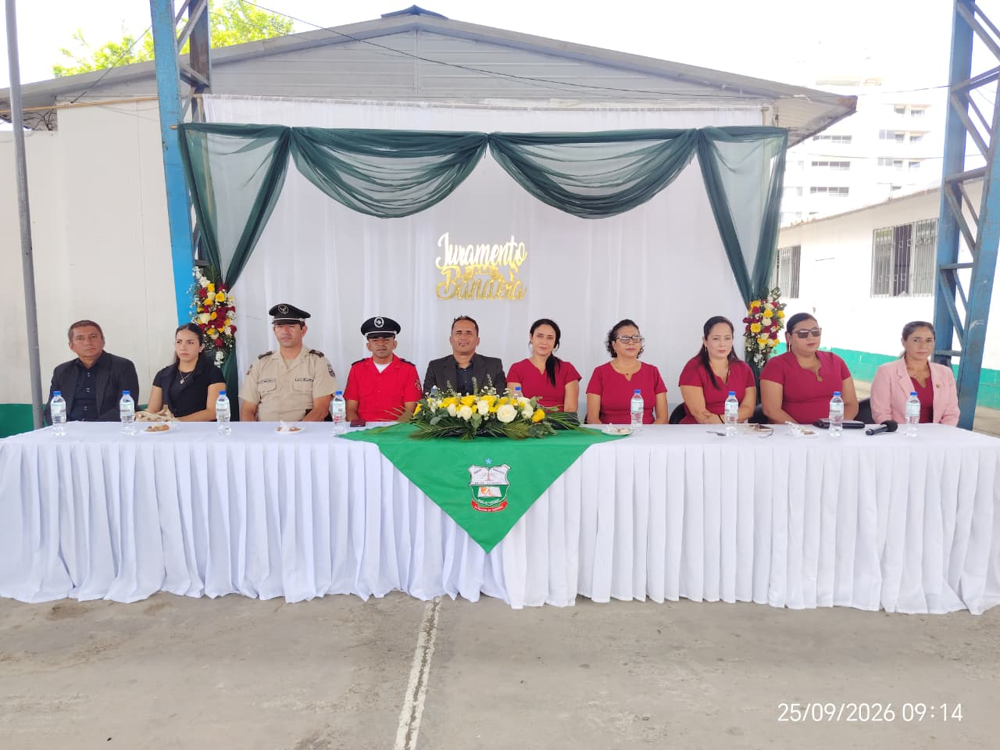
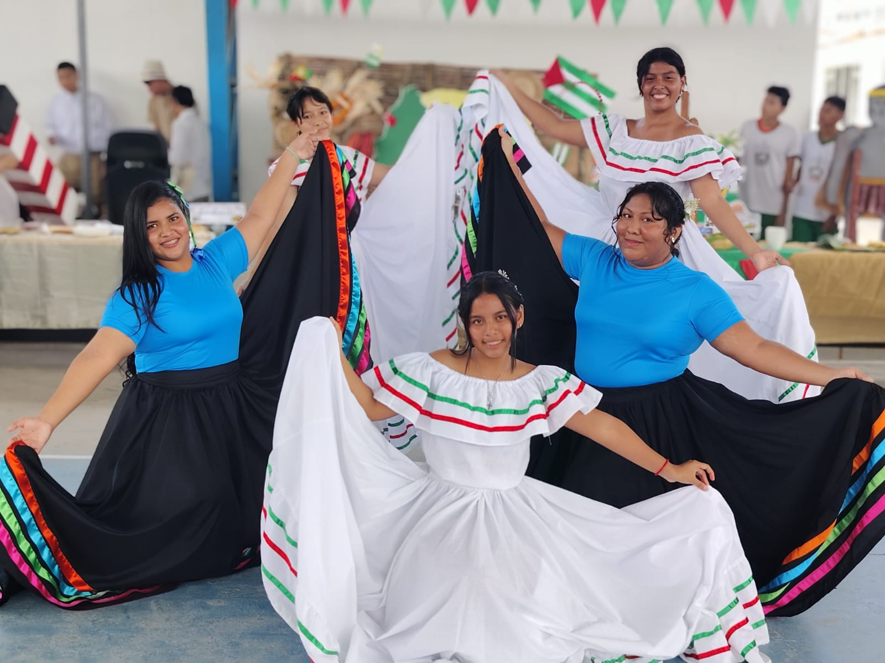
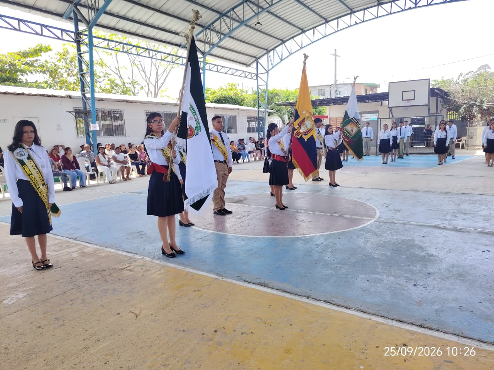
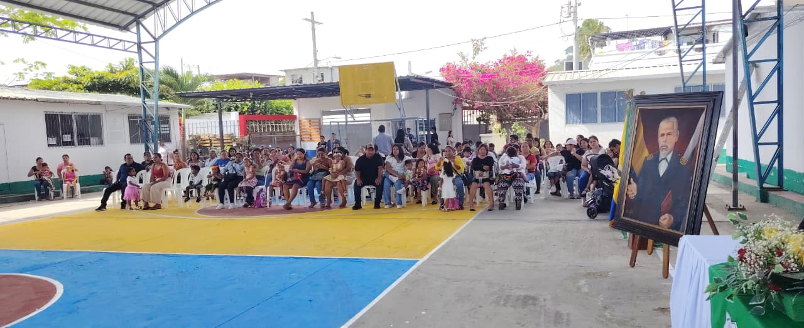
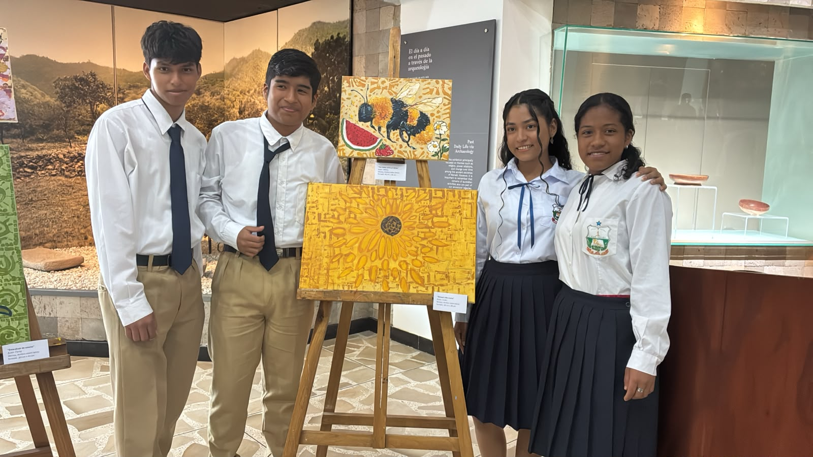
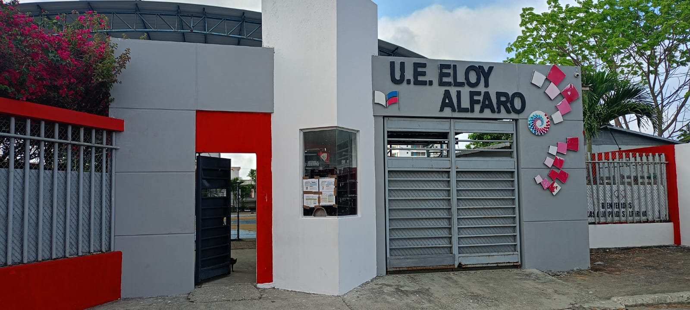
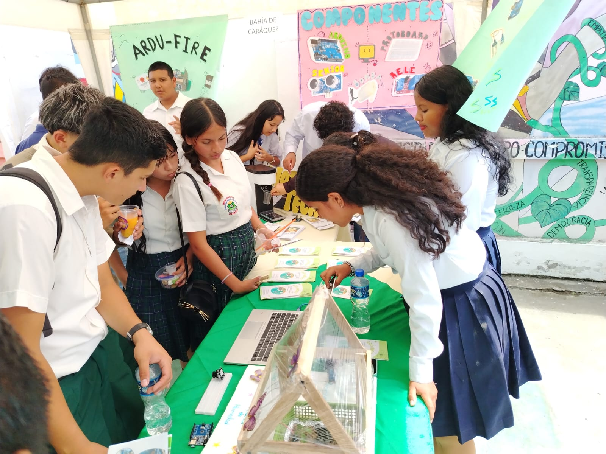

UNIDAD EDUCATIVA FISCAL · ELOY ALFARO
El futuro se construye aprendiendo.
Una comunidad educativa para descubrir talentos, aprender y avanzar.
INICIALPrimeros descubrimientos
BÁSICAElemental · Media · Superior
CIENCIASBachillerato
TÉCNICOSoporte informático

Aprender para avanzarUna etapa educativa para cada camino.
NUESTRA INSTITUCIÓN
Una comunidad con mirada al futuro.
Acompañamos el aprendizaje desde Inicial hasta Bachillerato, junto a estudiantes y familias.
CONÓCENOS →LO QUE NOS INSPIRA
Aprender más allá del aula.
OFERTA EDUCATIVA
Un camino para cada etapa.


UNA COMUNIDAD QUE CRECE
Educamos y avanzamos juntos.
Contador de visitas con CounterAPI.
MOMENTOS DEL PLANTEL
NOTICIAS Y ACTIVIDADES
La escuela en movimiento.
MÁS NOVEDADES →


CONTACTO
¿Quieres conocer más?
Escríbenos para consultar sobre nuestros niveles y actividades.
CONTÁCTANOS ↗
UBICACIÓN Y MÁS INFORMACIÓN ↗